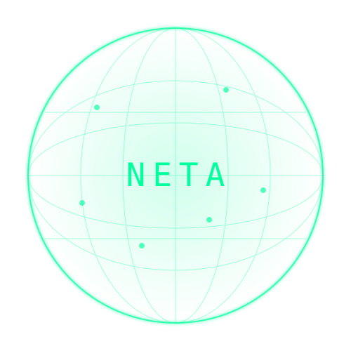

PEOPLE / POWER / PROTOCOL
NETA HOLDER RANKING
Transparent. On-Chain. Together.
Explore the economic distribution of NETA across Juno, Osmosis and the NETA DAO.
Enter any Juno or Osmosis address to see its current position.
No wallet connection required.

A BRIGHTER
TOMORROW
IS A
DECENTRALIZED
ONE
TOMORROW
IS A
DECENTRALIZED
ONE
TOP HOLDERS
| # | ADDRESS / LABEL | JUNO NETA ↕ | OSMOSIS NETA ↕ | DAO STAKED ↕ | DAO UNSTAKING ↕ | DAO CLAIMABLE ↕ | LP NETA ↕ | TOTAL NETA ↓ | TYPE |
|---|
ⓘ Economic ranking: direct Juno and Osmosis balances are combined with DAO stakes, active unbonding, matured claimable withdrawals and NETA held economically through validated LP positions. Click a balance column heading to sort all economic holders by that component; the first 100 results are shown.
NETA REBORN
JOIN THE COMMUNITY.
Connect with NETA holders, builders and community members on Telegram.